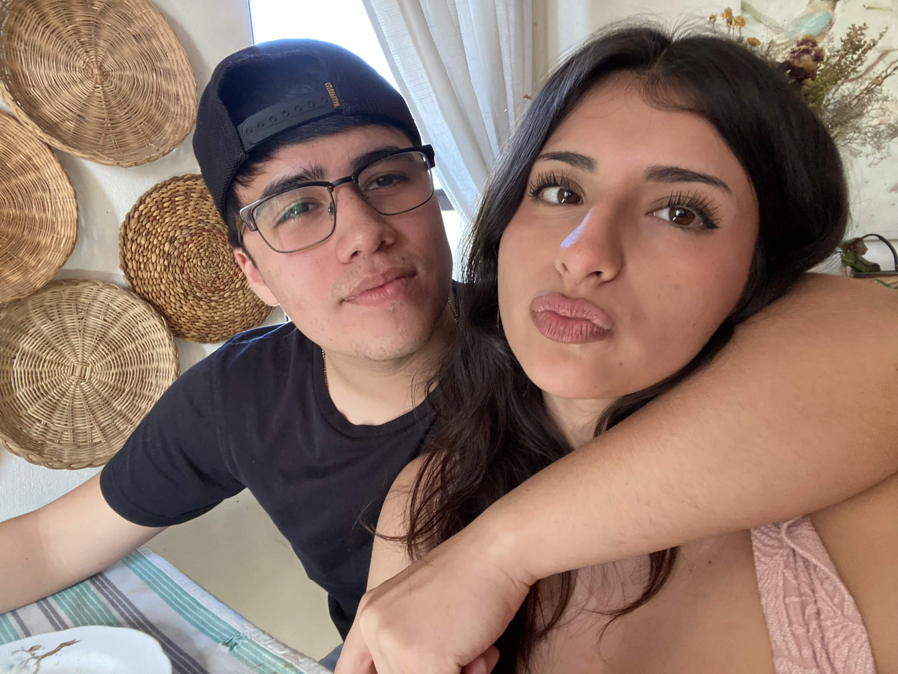
01
Los días normales contigo nunca terminan siendo normales. ♥
Hay personas que llegan a tu vida sin avisar y terminan convirtiéndose en una de las partes más bonitas de ella.
Preparé algo para ti.
Toca cada recuerdo para descubrir cómo empezó todo.
Te vi en un carrete, y un mamawebo te estaba molestando, asi que llegue yo a salvarte
Y me acerqué para ayudarte.
Después de eso me quedé conversando contigo. Hablamos, nos reímos y, sin darme cuenta, dejé de pensar en todo lo demás.
Mientras más hablaba contigo, más especial se sentía ese momento.
Y aunque recién te estaba conociendo, sentí algo que todavía hoy me cuesta explicar.
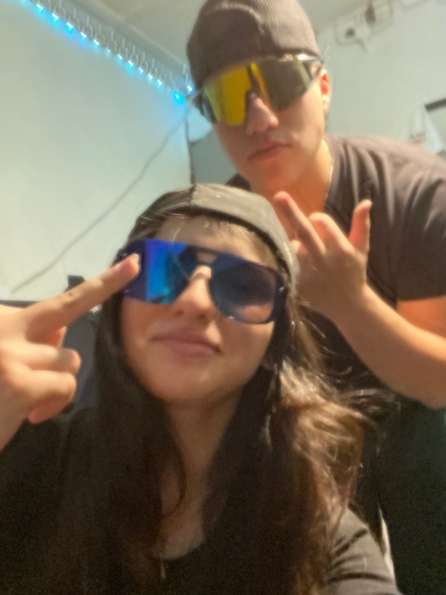
Y pensar que todo empezó aquella noche...Hay recuerdos que parecen pequeños, pero terminan significando muchísimo.
Tócalo para abrirlo ♥
Era mi cumpleaños, pero terminaste siendo tú una de las mejores partes de ese día.
Salimos, lo pasamos increíble y hasta logré adivinar tu Starbucks favorito.
Quizás todavía no éramos “nosotros”, pero yo ya sabía que quería seguir acumulando días contigo.
Cuando llegaste corriendo hasta mi sala con mi regalo envuelto.
Puede que para ti haya sido algo simple, pero para mí significó muchísimo.
Preparé ese rincón pensando en ti. La manta, los globos, la cajita, el cartel... todo tenía una sola intención.
Quería que ese momento se quedara con nosotros para siempre. Y ahí, con el corazón acelerado, te hice la pregunta más importante.
Y entonces...
Puede que para otros haya sido algo simple, pero para mí fue uno de los momentos más bonitos de todos.
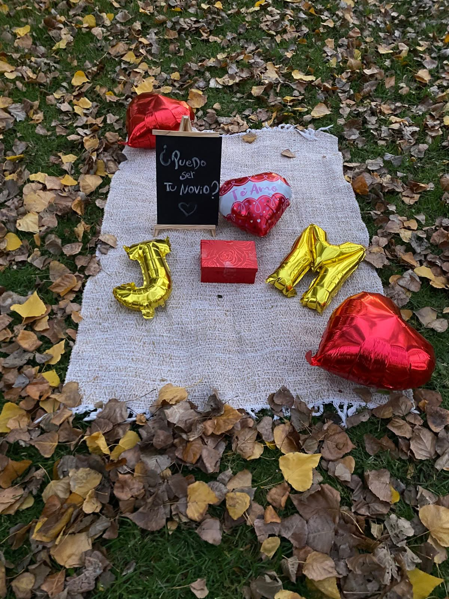
Ese rincón donde te hice la pregunta más importante. ❤️Frente a cientos de personas, pero en ese momento sentí que estábamos solos tú y yo.
Bailamos dos cuecas juntos en el evento del colegio, frente a muchísima gente.
Y aunque había cientos de personas mirando, yo solo estaba pendiente de ti.
Me encantó compartir ese momento contigo, verte sonreír y saber que estabas ahí, conmigo. ♥
De todos los que estaban mirando, yo solo quería seguir bailando contigo. ♥
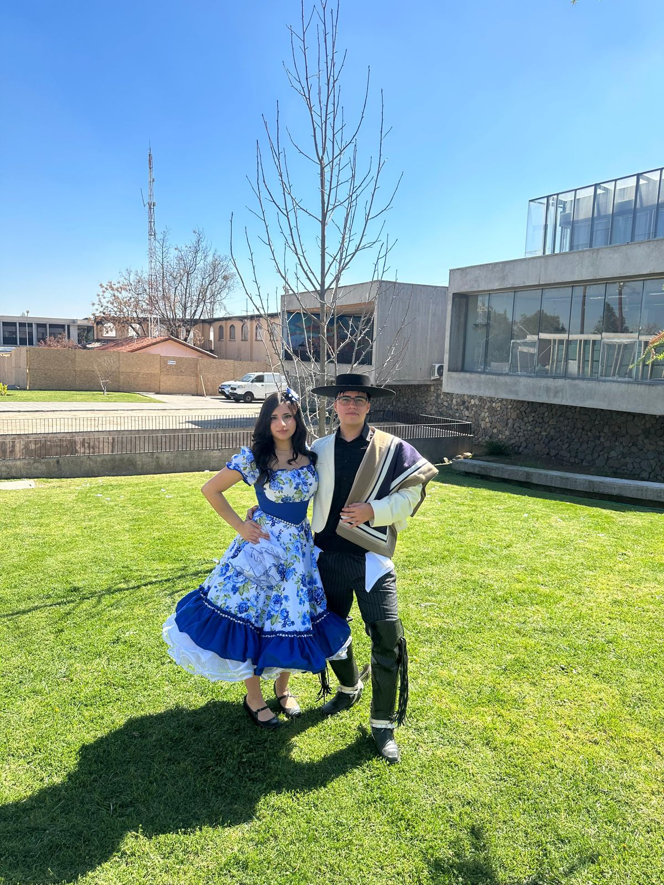
Podría hacer otra lista de 100 razones... pero hay cosas que prefiero que descubras tú misma.
Tus gestos, tus palabras, tu forma de reír, cómo me tratas, cómo me miras, cómo haces que cualquier día normal se sienta un poquito más bonito.
Te amo por quien eres. ♥No todos necesitan una fecha importante. Algunos simplemente se volvieron especiales porque estabas tú.

Los días normales contigo nunca terminan siendo normales. ♥
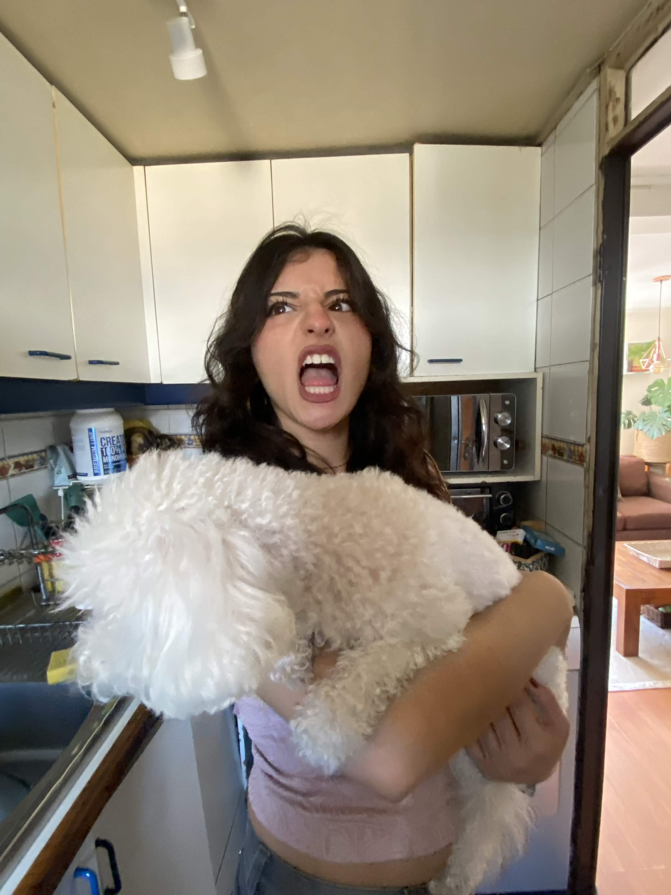
Todavía me pasa que te miro y pienso: qué linda eres.
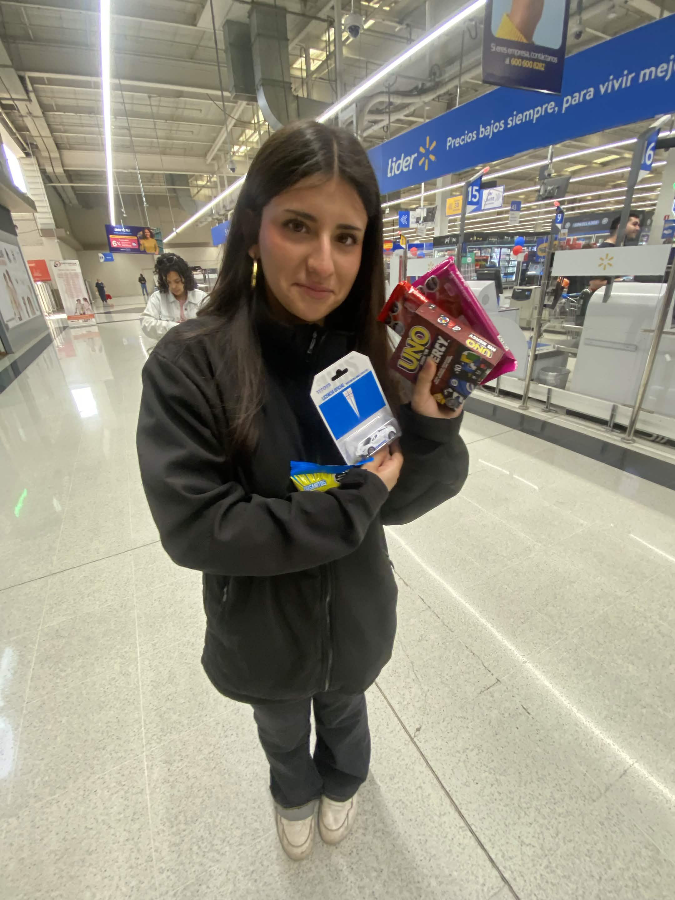
También amo todas nuestras estupideces.
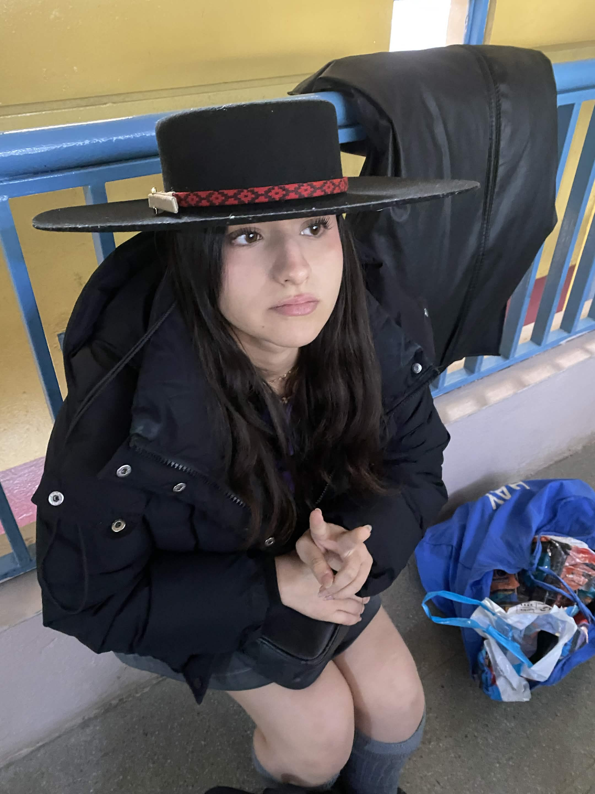
Cada lugar se vuelve recuerdo si estás tú.
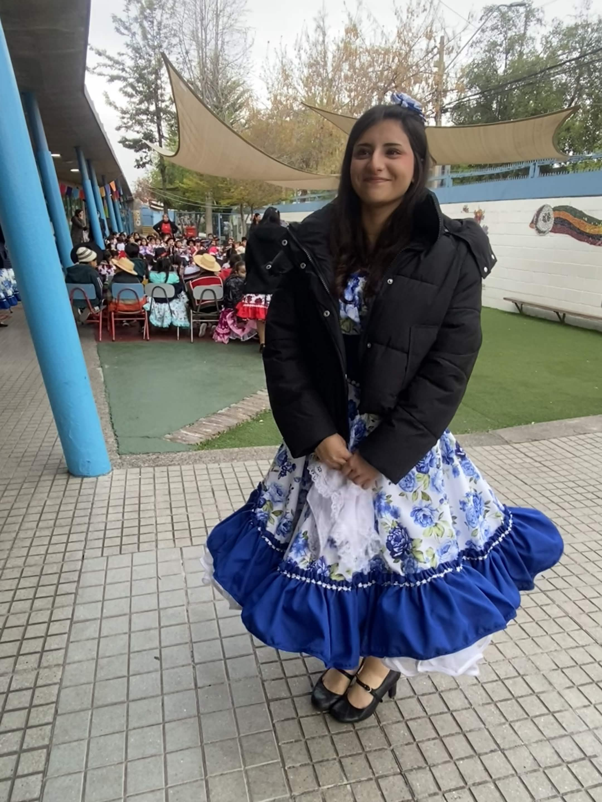
Mis favoritas casi siempre son las que no planeamos.
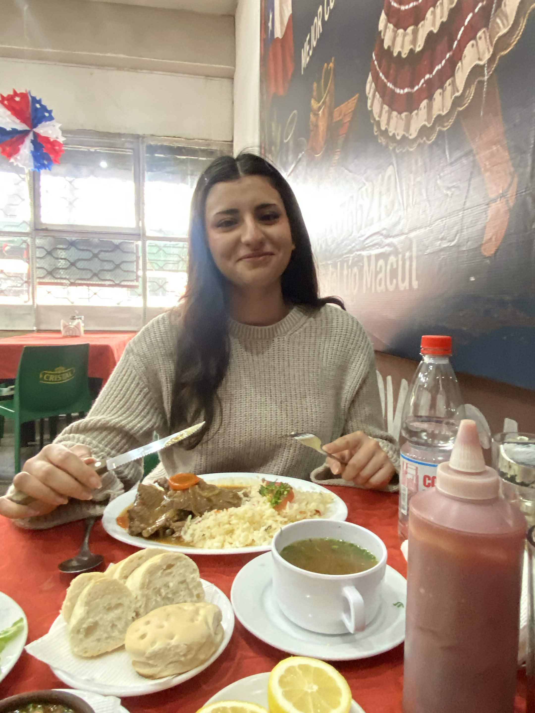
Hay momentos pequeños que contigo terminan significando muchísimo.
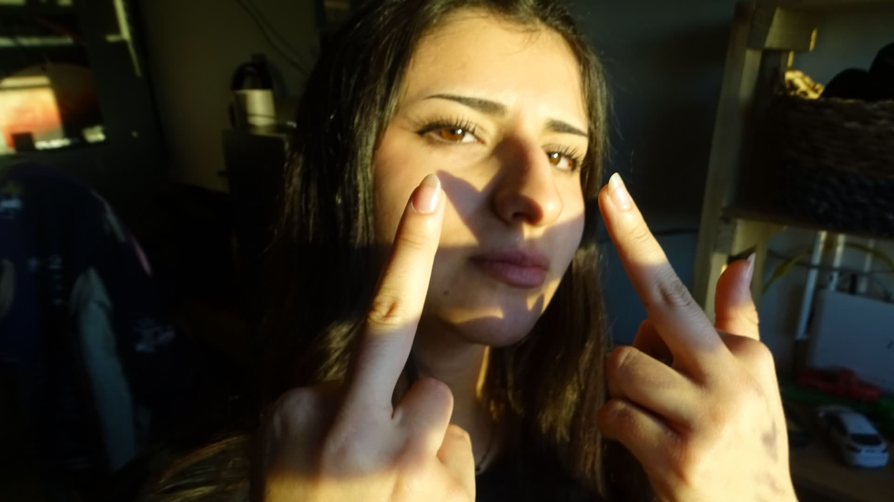
Me encanta pensar en todas las veces que simplemente fuimos nosotros.
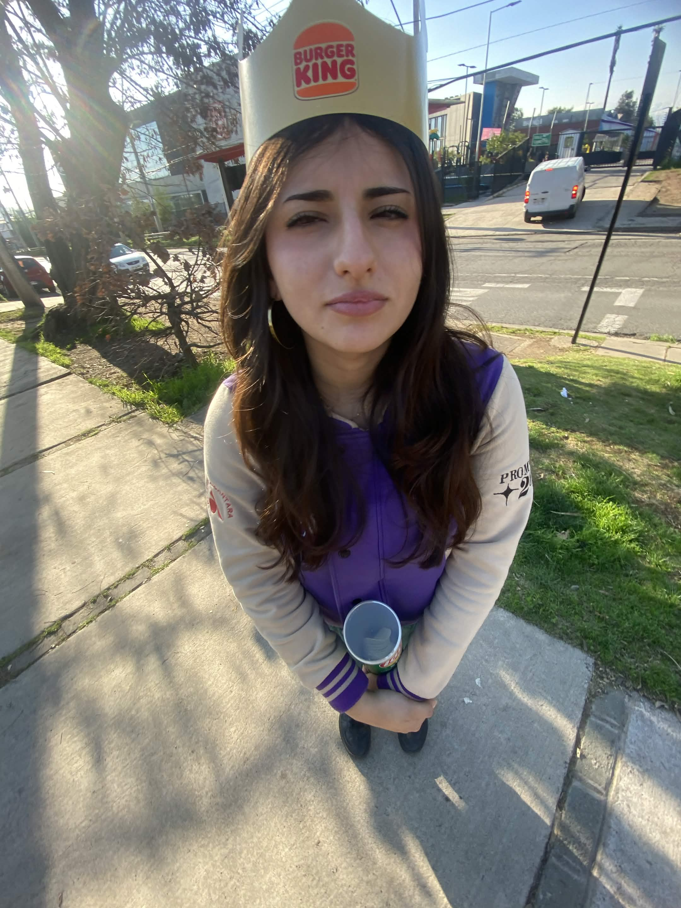
Contigo hasta una foto cualquiera termina siendo especial.
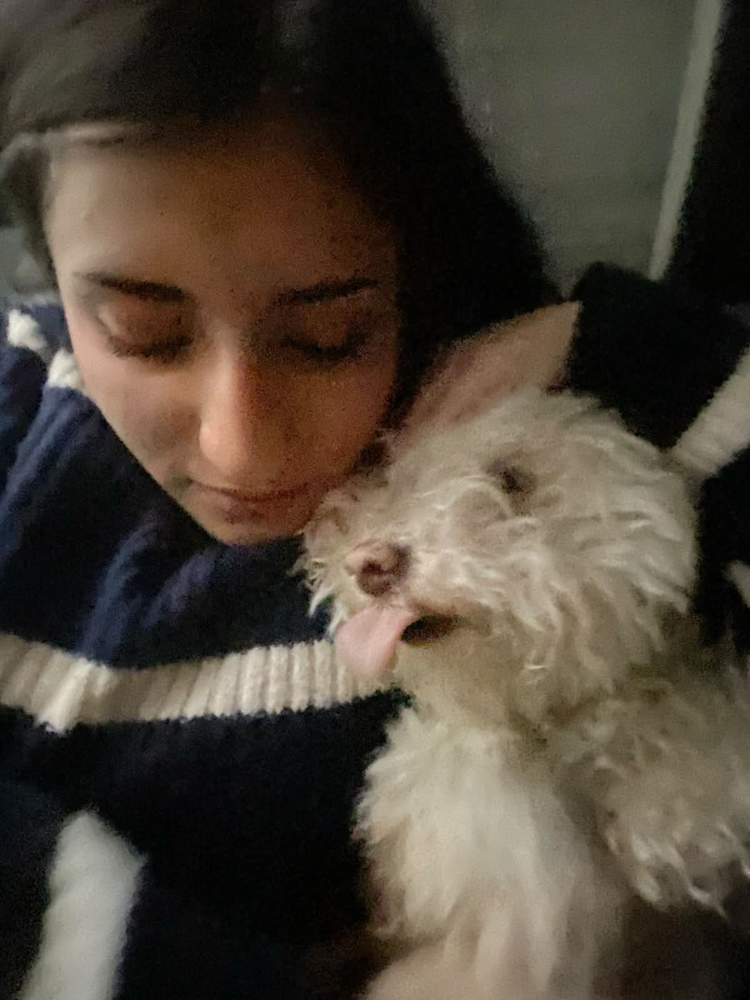
Quiero seguir guardando momentos así contigo.
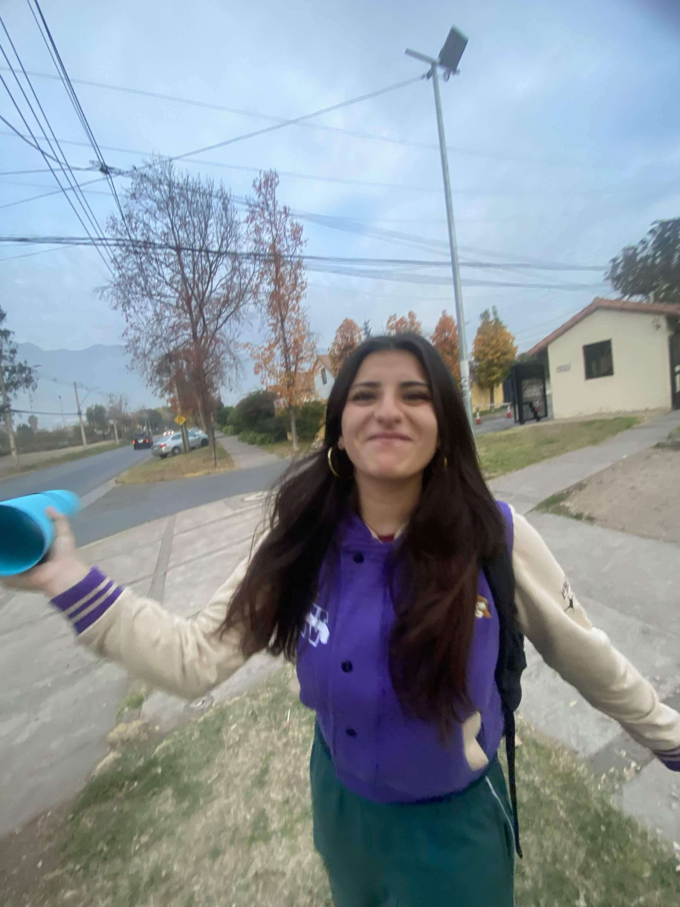
Y todavía nos quedan demasiadas fotos, lugares y recuerdos por vivir. ♥
Podría seguir agregando recuerdos, momentos y razones por las que te amo.
Pero creo que esta página ya explica bastante bien lo importante que te volviste para mí.
Gracias por cada salida, cada conversación, cada abrazo, cada risa y cada momento que terminamos convirtiendo en un recuerdo.
Y gracias, sobre todo, por dejarme compartir tu vida contigo.
Espero seguir llenando esta historia de muchos momentos más. ♥Espero que hoy tengas un día tan bonito como todos los que tú has hecho más bonitos para mí.
Te amo muchísimo.